为什么我们需要可解释的机器学习#
在很多场合，仅仅让AI给出答案是不够的，我们还需要让AI告诉我们为什么它认为这是答案，比如：
- AI执法时除了给出判决，还需要给出它的依据
- 自动驾驶时汽车突然刹车，事后可能要分析做出突然刹车的决定的理由
- AI开药时除了给出处方，还需要给出开这种处方的理由
可解释机器学习的目标#
关于这个话题有很多的观点，李宏毅老师的观点是我们并不是因为神经网络是黑箱而不敢用它的决策，因为我们的大脑其实也可以看成黑箱，但我们还是遵从大脑的决策。其实我们只是需要一个用这个决策的理由罢了。所以可解释机器学习的目标，也许只是让人有一个相信AI的理由而已。
Harvard做过一个心理学实验，这个实验是以不同方式询问排队使用打印机的同学是否可以插队并收集反应。
- “对不起，我只有5面需要打印，你能让我先用打印机吗？”——60%的人同意
- “对不起，我只有5面需要打印，你能让我先用打印机吗？因为我赶时间。”——94%的人同意
- “对不起，我只有5面需要打印，你能让我先用打印机吗？因为我需要打印。”——93%的人同意
所以哪怕第三种询问方式的理由非常无厘头，也能大大提高同意插队的概率，所以也许决策时更多只是需要一个理由。这个实验一定程度上能佐证李宏毅老师的观点。
Local Explaination#
让我们了解一只猫在模型“眼里”是什么样的
理解对模型决策重要的部分#
如何理解#
比如今天我们输入一只猫，我们希望知道哪些部分对于模型判断它是只猫是重要的，那么我们可以将它的一部分遮挡，然后观察被遮挡后的图片被模型判断出是猫的概率，如果某个部分被遮挡后的图片被认为是猫的概率较低，就可以认为这部分对模型的判断而言是重要的。
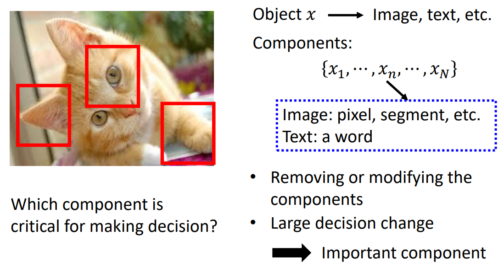比如下面这张图中，用灰色块去遮挡第一排的图片的不同位置，产生第二排的结果。第二排中蓝色部分代表这部分被遮挡后判断正确概率较低。
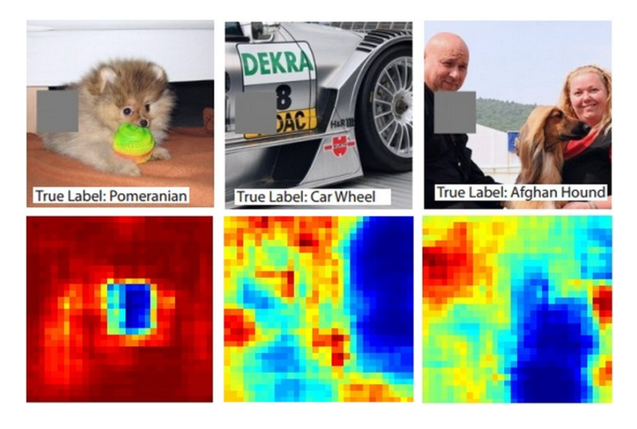如果想要更精确地了解哪部分对于模型是重要的，可以在每一个像素上加上一个很小的值，然后观察模型输出概率的变化，然后通过变化率
限制#
但是实际上，产生的Saliency Map大部分都是含有比较多的噪声的，所以https://arxiv.org/abs/1706.03825中提出可以将原图加上不同的随机噪声，然后得到多张Saliency Map后再取平均，可以起到平滑的作用。
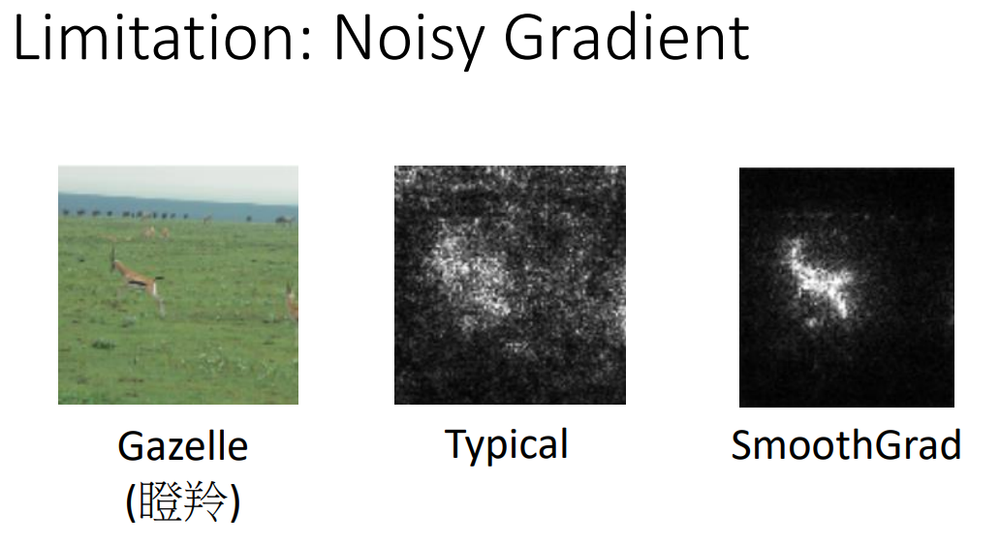除此之外，可能还会遇到Gradient Saturation的问题，比如判断鼻子长度和是大象的概率的相关性时，当鼻子比较短时，是大象的概率会随鼻子长度的增长而增长，但是鼻子长度比较长的时候，可能被判断为是大象的概率就不会增长了。这个例子是说明在生成Saliency Map中，可能某些重要要素会由于Gradient Saturation的问题导致没有被检测出来。
对于这个问题，可以通过https://arxiv.org/abs/1611.02639提到的Integrated gradient来解决。
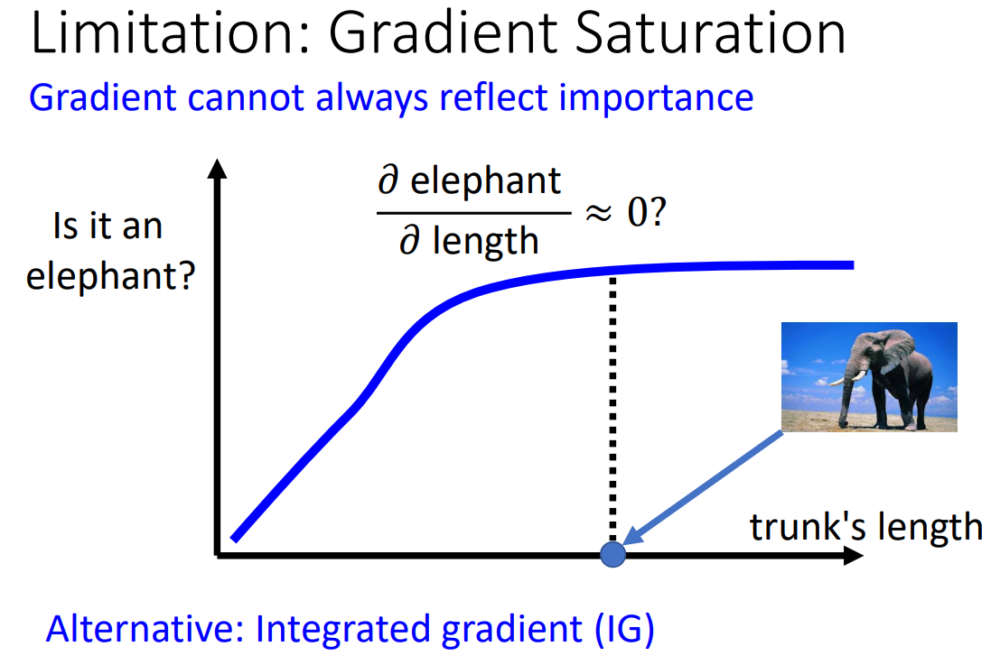下图是照相机图片的Integrated gradient图和gradient图的对比，明显可以发现Integrate gradient可以更好的解释模型为什么做出物体是照相机的判断。
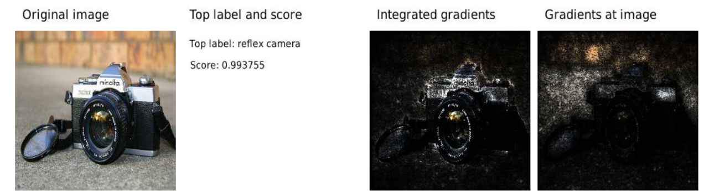为什么要理解对模型输出重要的部分#
因为有时候模型并不一定是看到猫眼、猫耳等特征才知道是猫的，比如下图中左下角有一串文字，模型认为这串文字才是分类的重点，这与我们的目标是不符合的。通过观察哪些部分对模型是重要的，我们可以了解模型是不是学会了我们真正想让模型学习的任务。
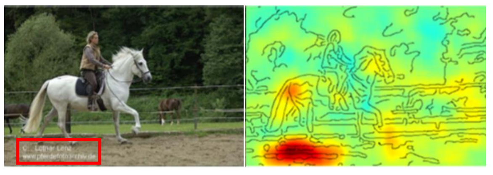理解模型对于输入的处理#
将输出进行降维#
Hinton在12年时就尝试过把语音识别系统的输出进行降维，然后发现不同语者（用不同颜色的点表示）说的同样的话的分布是接近的，所以可以认为语音识别系统真正学会了无视说话的人，而将注意力集中在说话的内容上。
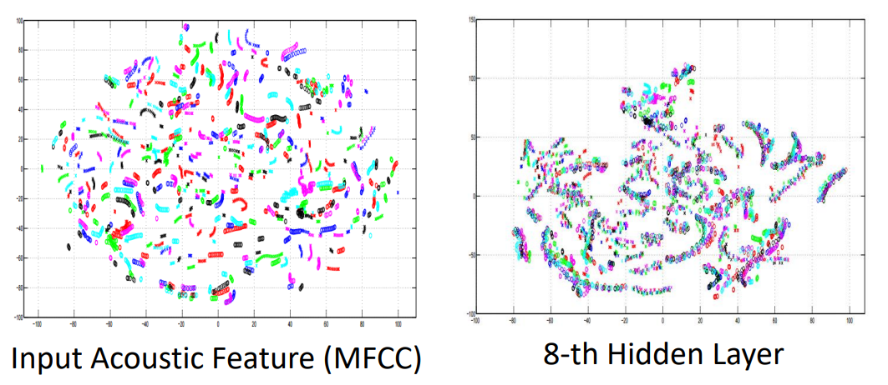观察模型参数#
比如在Self-attention中，我们可以观察attention score来了解模型对于某个输入的哪些部分比较在意，以及这个Self-attention层对这个输入做了什么处理。
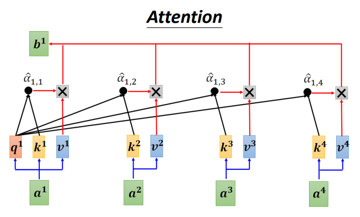Probing#
我们可以将模型中某一层的输出进行处理，来观察这一层之前的模型对输入做了什么处理。比如可以把BERT中某一层的输出输入一个分类器里面，进行词性的分类。但是要求分类器的性能比较好。
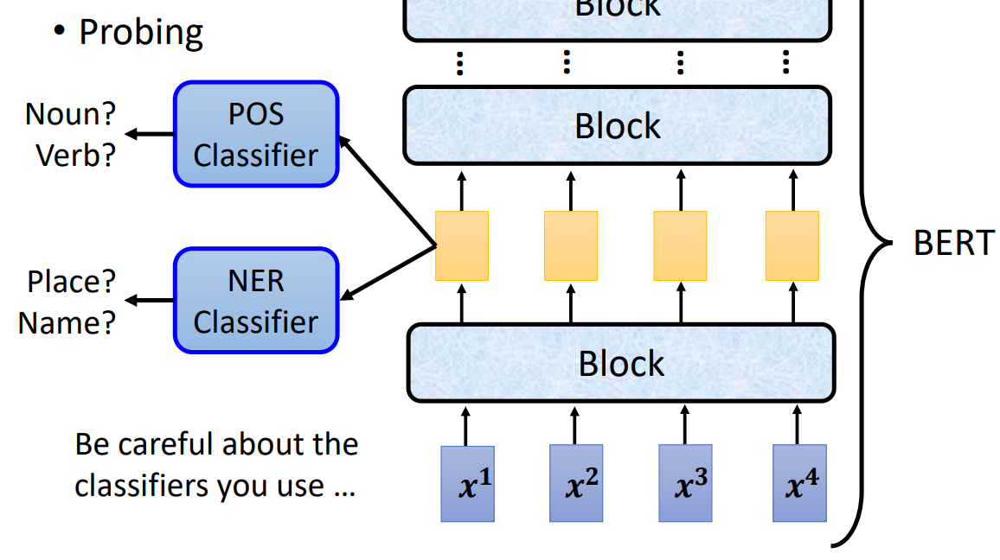或者在语音识别系统中，我们把前几层的输出作为TTS（text to speech）的输入，假设发现TTS的输出的语音中说话的人已经无法被分辨，那么模型的前几层的作用可能就是把输入的声音中说话的人的特征模糊了。
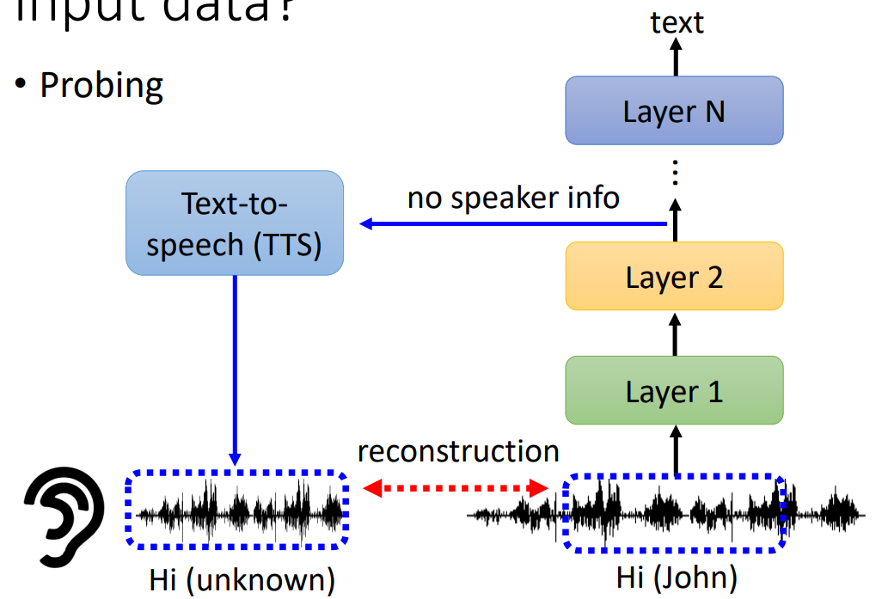Global Explaination#
让我们了解模型“心中”的猫是什么样的
在CNN中，可以把卷积层的输出理解为特征图，特征图的值越大，说明图像中特征越明显，那么我们可以固定卷积层的参数，用gradient ascent（和gradient decent是类似的）的方法去找出一张让卷积层输出的特征图的所有像素的值的累加最大的图片
比如一个做手写数字识别的12层CNN中我们对每个卷积层求它的

基于先验知识的限制#
通过之前提到的gradient ascent找出
但是实际上，直接这么操作产生的图片并不会有很好的结果，而是产生下方图片左侧的马赛克状的图片。但是我们如果从adversarial attack（21年貌似先讲adversarial attack，22年才是先讲explainable ML）的角度来想，一个人眼不可见的杂讯可以使得模型判别的结果直接改变，那么就能比较好地理解为什么直接用gradient ascent会产生马赛克状的图片。
所以我们需要给优化函数加上一个
下图是https://arxiv.org/abs/1506.06579中得到的部分模型“心中”的各种物体的图像。
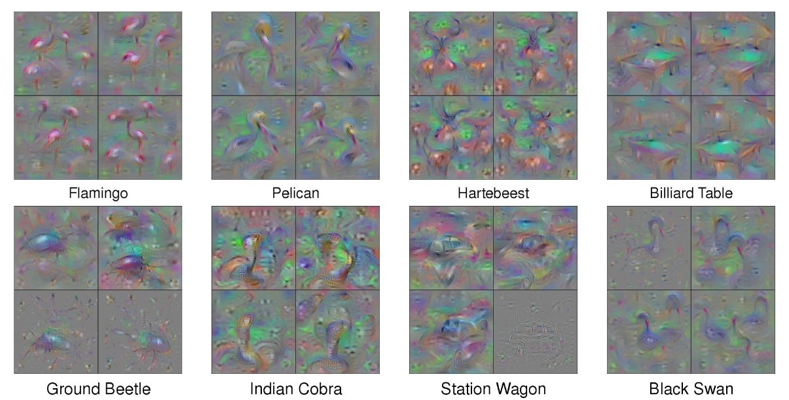基于生成的限制#
在优化函数中加入限制项或许可以起到效果，但是需要一定的先验知识，还需要复杂的调参过程。另一种比较明朗的方法是先训练一个把向量变成图片的生成器（GAN、VAE之类），然后把生成器和分类器接在一起，固定整个模型的参数，用gradient ascent的方法找出使得输出为某个类别的概率最大的向量
下图是https://arxiv.org/abs/1612.00005中得到的一些模型“心中”的火山的图像

LIME#
线性的模型的可解释性是很强的，因为我们可以了解到每一个元素的权重，但是它在复杂任务上表现不佳。所以我们也许可以用线性模型来模拟复杂模型中的一小部分，来解释这一小部分的作用。
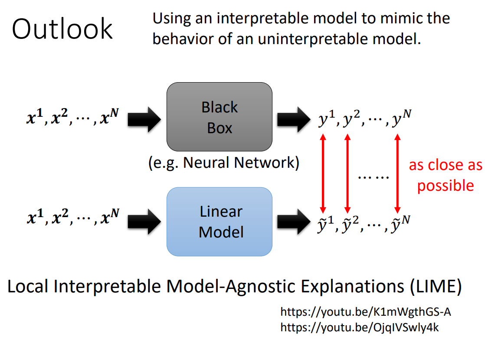作者: 核子